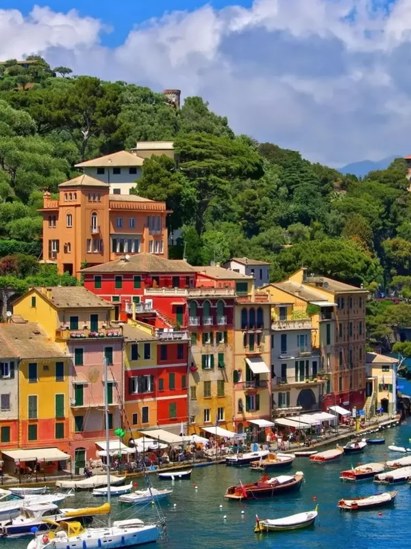

Country Data
- Capital
- Rome
- Official language
- Italian
- Currency
- Euro (€)
- Continent
- Europe
- Known for
- Art, food & history
- Coastline
- Mediterranean Sea
Weather
- Temperature
- 8°C
- Conditions
- Partly cloudy
- Wind
- 12 km/h
- Wind chill
- —
La bellezza di vivere
